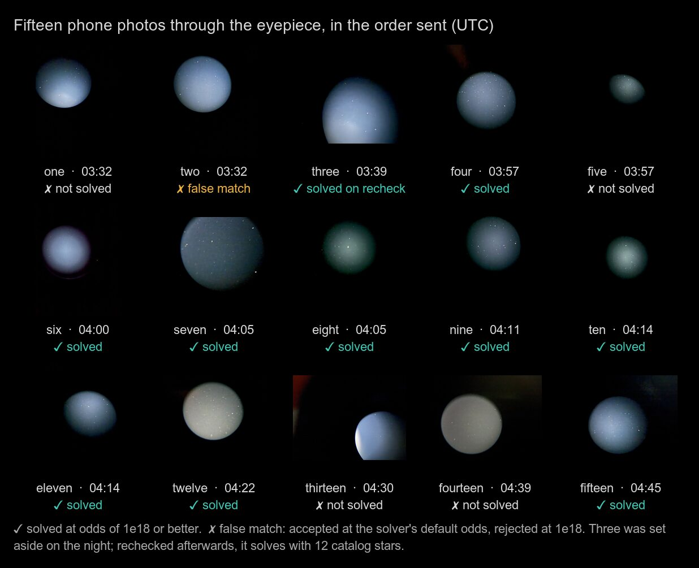
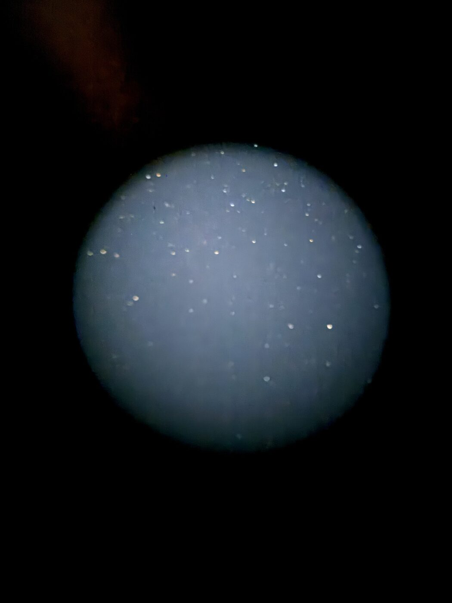
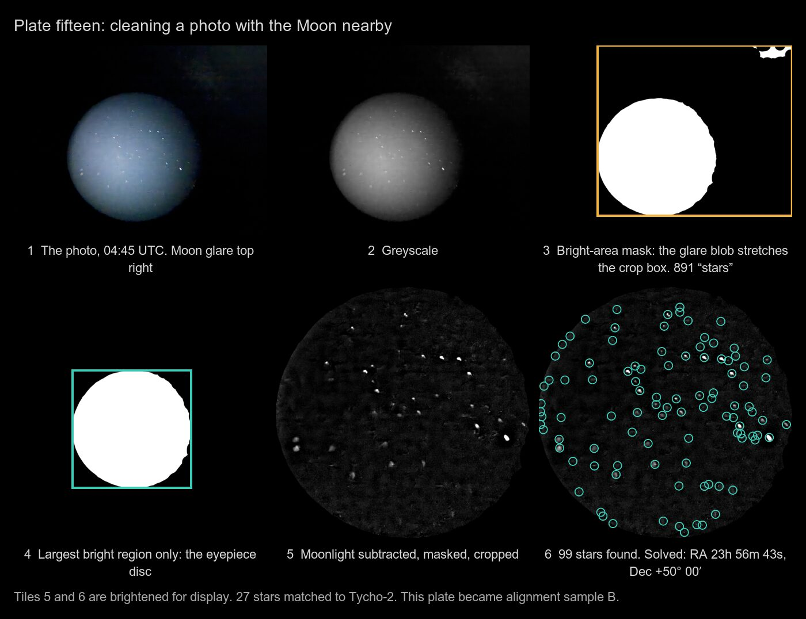
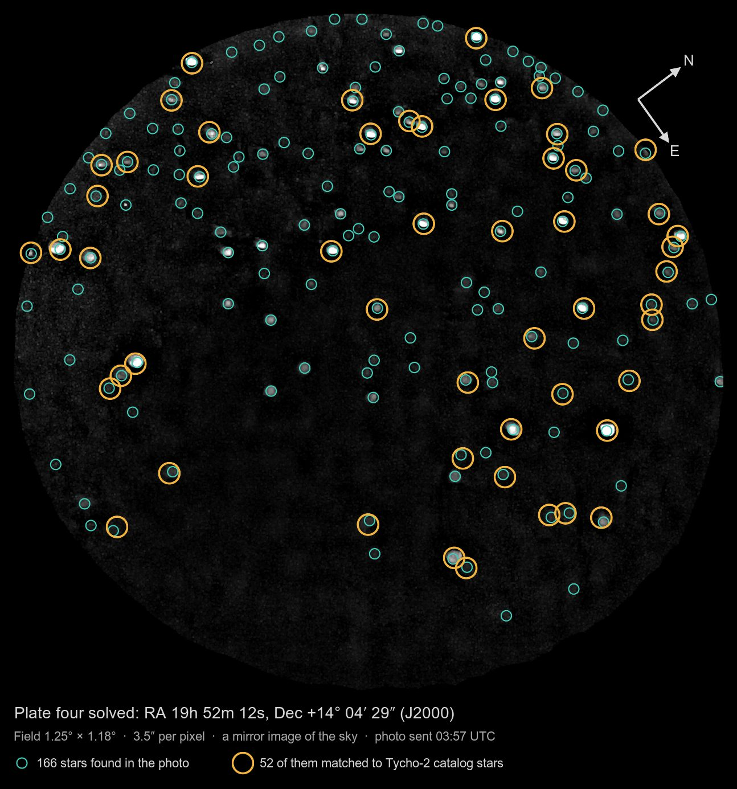
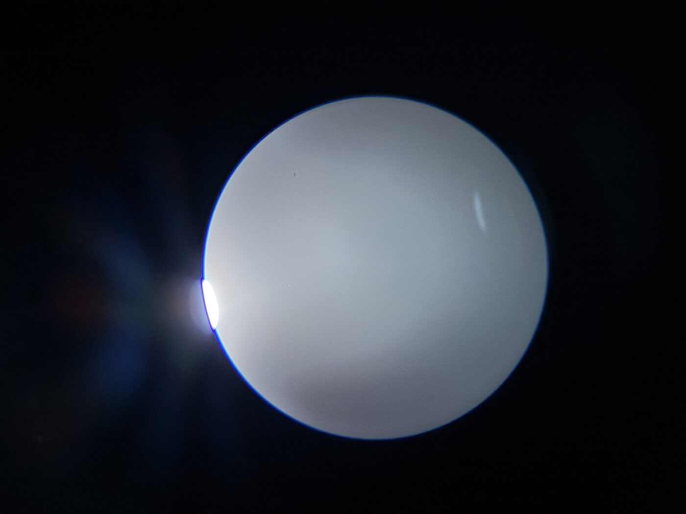

Phone photos through the eyepiece, and the wrong Moon
The last few posts were about setting the mount down anyhow and letting the stars sort it out. Tonight I tested that harder than I meant to. Polaris is behind my house, so no polar alignment. I didn't level the tripod. I didn't zero the axes. I didn't know where Vega was. What I had was a full Moon washing out the sky, an EQ6-R pointed roughly north, and a phone.
The question: can somebody who knows nothing walk outside, plop this thing down, and have the software work out how crooked it is?
Photos held up to the eyepiece
There was no camera on the scope. I held my iPhone up to the eyepiece, took a picture, swung the scope somewhere else with the game pad, and took another. Fifteen of them.

A photo through an eyepiece is not what a plate solver wants. It's a bright round window in a black frame, a few dozen stars smeared into little comets by my hand, and whatever the Moon is doing to the sky that night. This was the best one:

Cleaning a photo into a star field
A plate solver wants points of light on black, so the first job is to throw away everything that isn't a star in the eyepiece. It's all ImageMagick, all deterministic:
- Grey. Colour doesn't help.
- Find the eyepiece. Blur hard, threshold at 8%, and erode by 50 px so the soft edge of the disc is gone. What's left is a mask of the field.
- Keep only the biggest bright region. On plate fifteen the Moon's glare survived the threshold as a second blob, and the crop took in both. The eyepiece is the biggest bright thing in the photo, so keep that and nothing else.
- Flatten. Subtract a 25 px blur of the image from itself. Moonlight is a smooth gradient and stars are points, so this takes off the glow and leaves the stars.
- Crop and stretch. Crop to the disc and auto-level.
- Find the stars.
image2xyat 40σ. At its default it happily counts JPEG noise as stars.

Step 3 is the one tonight added. It went into Controller.Sky.Solve.Local as a connected-components pass:
# apps/controller/lib/controller/sky/solve/local.ex
# Moonlight flaring off the eyepiece's edge survives the threshold as a
# second bright blob, and a crop around both lets the glare in (the first
# night, plate fifteen). The eyepiece is the biggest bright region: keep
# only that, and crop to it.
defp eyepiece(mask, dir, opts, deadline) do
listing = ["-define", "connected-components:verbose=true", "-connected-components", "8", "null:"]
with {:ok, out} <- step(:magick, [mask | listing], dir, opts, deadline) do
case eyepiece_disc(out) do
nil -> {:ok, nil}
disc -> ...keep only disc.id, crop to disc.box
end
end
end
A disc has to be at least 5% of the frame to count. Below that it's the halo of a bright star, and a photo with no eyepiece in it (a camera on the scope, say) goes down the plain path untouched.
Plate solving
The solver is astrometry.net 0.97 with the Tycho-2 index files 4107 to 4114. That's 348 MB, which is nothing, and the Pi's system image now builds the solver in. Nothing in the path needs Python: djpeg, an-pnmtofits, image2xy, then solve-field on the star list.

Ten of the fifteen solved. The five that didn't: a blurry first shot, one with the phone tilted so the disc was an ellipse, two drowned in moonlight, and one that only ever produced a false match. With the fixes below, the pipeline in the app solves plate fifteen in 13 seconds on the Mac.
The bigger lesson was the ones that solved wrong. At solve-field's default confidence it accepted two false matches, each on three stars. One put the photo at Dec −69°, which is below my horizon. The false ones scored odds of about 10⁹ to 10¹⁰; the real ones 10²⁸ and up. So the bar sits between them:
# min_odds: (1.0e18) how sure a match must be. solve-field's own
# default (1e9) let through two false matches the first night, each on
# 3 stars at about 1e9; every real one scored 1e28 or better
@min_odds 1.0e18
It cut the other way once, too. Plate three was set aside on the night because the solver's log printed a low score. That line is its first check; the final score, in the match file, was 10⁴⁰ on twelve stars. Read the right number.
A mount nobody zeroed
The model from Star Align has four numbers: where the polar axis points (altitude and azimuth) and a zero offset for each encoder. I never zeroed the axes, so the offsets could be anything at all, and Levenberg-Marquardt started from a bad guess wanders off. So the fit now starts with a coarse sweep of every offset pair, 10° apart, and refines the best one:
# apps/controller/lib/controller/sky/model.ex
defp sweep_offsets(samples, signs, start) do
for(ra <- 0..350//10, dec <- -180..170//10, do: %{start | off_ra: ra / 1, off_dec: dec / 1})
|> Enum.min_by(fn p -> Enum.reduce(samples, 0.0, &(&2 + residual_deg(p, signs, &1))) end)
end
One plate is not enough. A single solved photo fits the axis on either side of the pier equally well, and the first GoTo toward the Moon on a one-plate fit pointed the tube into my garage. The rule now: small moves only until two plates agree. With two, the GoTo landed right beside the Moon:

Two plates plus the Moon, once I'd centred it, gave the answer: the polar axis is 5.3° from the pole, 3.1° too low and 5.3° west. That's a badly set-up mount.
Centring the Moon by talking about it
From there it was me at the eyepiece saying "down five percent, left twenty," and nudges going out. On this mount, as I see it in the eyepiece, Dec+ moves the view left and RA+ moves it down. That took two wrong guesses to learn, and one nudge went the wrong way because a photo from the phone was flipped relative to my eye. The software can know this from the plate's rotation and parity, and next time it will.

Holding it
On a polar-aligned mount you turn on lunar tracking and walk away. On this one the Moon drifts on both axes, so a loop runs every 20 seconds: work out where the model says the encoders should be for the Moon now, minus where it said they should be when the Moon was centred, and move the difference. It only uses the model's rates, never its absolute aim, so a fit that's 20′ off in absolute terms still tracks well.
Over the first 17 minutes it made 8 corrections on RA and 27 on Dec, each well under two arcminutes, and the Moon stayed put in a field about 70′ across. Lunar tracking alone would have walked it off the edge in Dec in about half an hour.
The wrong Moon
The fit didn't agree with itself. Three samples that should agree to a few arcminutes were 23′ rms apart, and the Moon sample was the odd one out.
The Moon is only 381,577 km away tonight. From anywhere but the centre of the Earth it's somewhere else in the sky; that's parallax, and for the Moon it's up to a degree. The ephemeris placed it from the centre of the Earth. It also placed it against the equinox of date, while the star catalogues, the plate solver and the model all work in J2000. Two errors:
| Tonight | |
|---|---|
| Parallax, from where I stand | 45.1′ |
| Precession, 2000 to today | 22.4′ |
| Together (they partly cancel) | 44.6′ |
That's more than half the eyepiece's field. The Moon the model was fitted to was not the Moon I was looking at. With the Moon put where I see it, in J2000, the same three samples agree to 6.6′ rms instead of 23.4′.
The fix is the observer's own position, taken off the Moon's:
# apps/controller/lib/controller/sky/ephemeris.ex
def topocentric(%{distance_km: dist} = p, dt, %{lat: lat, lon: lon} = site) do
phi = lat * @deg
h = Map.get(site, :elevation_m, 0) / 1000 / @earth_radius_km
# Meeus 11: the observer's distance from the axis and the equator, in Earth radii
u = :math.atan(0.99664719 * :math.tan(phi))
rho_sin = 0.99664719 * :math.sin(u) + h * :math.sin(phi)
rho_cos = :math.cos(u) + h * :math.cos(phi)
lst = Astro.lst_deg(dt, lon) * @deg
{x, y, z} = vec(p.ra_deg, p.dec_deg, dist / @earth_radius_km)
{x, y, z} = {x - rho_cos * :math.cos(lst), y - rho_cos * :math.sin(lst), z - rho_sin}
...
end
Checked against JPL Horizons on three dates, the new Moon is within 1.4′, and the parallax itself agrees to under a tenth of an arcminute. The old one was 45′ out. The sky map, the object page and the eyepiece view all pass the site now.
Every correction, zeros included
What the software is correcting for, all of it, including the ones that are zero or not modelled yet:
| Layer | Term | Tonight | Status |
|---|---|---|---|
| Target | Lunar parallax | 45.1′ | fixed tonight |
| Target | Precession, J2000 to today | 22.4′ | fixed tonight |
| Target | Refraction | about 1′ at the Moon's height | not applied yet |
| Geometry | Polar axis altitude | 3.1° low | fitted |
| Geometry | Polar axis azimuth | 5.3° west | fitted |
| Geometry | Tripod tilt, two axes | inside the two above | needs a level reading |
| Geometry | Encoder zeros | 299.7° and 132.7° | fitted, never zeroed |
| Geometry | Axis directions | RA +1, Dec −1 | checked against plates |
| Mechanics | Cone error, axes not square, flex | inside the 6.6′ | not modelled |
| Mechanics | Backlash, periodic error | seen, not measured | not modelled |
| Observation | Photo timestamps | ±45 s guessed, up to ±11′ | EXIF was stripped in transit |
| Observation | Plate solve | under 1″ | |
| Observation | Centring by eye | about 1% of the field | |
| Tracking | Both axes, every 20 s | under 2′ | holding |
The tripod is the interesting one. From the sky alone, a tripod that isn't level and polar-axis bolts that are set wrong look exactly the same: all the stars can see is where the axis ends up. Split them with a level reading of the mount head. If the north side is low by t, the axis altitude drops by t. If the west side is low by t, the axis swings west by t · tan(latitude). Give the software the tilt and "5.3° west" becomes "this much is the tripod, turn the azimuth bolt this much."
What went wrong
- The wrong Moon. Geocentric and in the wrong frame, 44.6′ out. Fixed, tested against Horizons.
- One plate sent the scope into the garage. One photo can't tell which side of the pier the axis is on. Small moves until two plates agree.
- False solves. At the default odds the solver matched noise, once to a spot below the horizon. The bar is 10¹⁸ now.
- A true solve thrown away. Plate three was dismissed on the solver's first-pass score. The final score is the one to read.
- Moonlight in the mask. Glare joined the eyepiece's disc. Only the biggest bright region is kept now.
- Photo times. The photos lost their EXIF on the way from the phone, so their times were guesses to within 45 s. At the sky's rate that's up to 11′ of error on a plate.
- Nudge directions. "Up" in the eyepiece, "up" in a photo, and "up" on an axis are three different things. The plate's rotation and parity say how they relate.
- The tracking loop stalled. It ran from the Mac as its own Erlang node, and
globalblocked on a node name it couldn't resolve. Running it hidden fixed it, but the real fix is the tracker running on the box.
What's next
- An encoder journal on the box. Every 250 ms snapshot to disk, so a photo's timestamp maps to exactly where the mount was, and the photo times stop being guesses.
- Tripod tilt from the phone. The orientation sensor on the mount head, asked for from a tap, splits tripod from bolts.
- The two-axis tracker on the box, with tonight's loop as its spec.
- Solving on the Pi. The solver and index are in the image; next is timing and containment, so a hung solve can't take down the mount.
- A crosshair with a margin. The sky map's scope mark now has a ring around it, true to size on the sky, for how far off it may be: the alignment's rms doubled, plus the tracker's live error. With tonight's alignment that's about ±13′.
- Return to target. Slew away with the pad, come back to the Moon, and see where it lands.